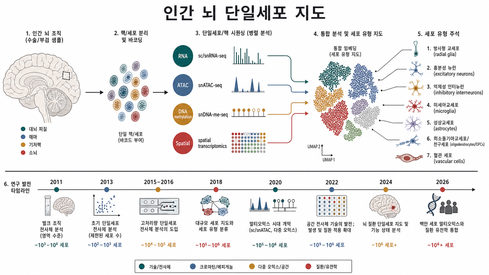

논문 타임라인 · 질문이 바뀌는 순간들
bulk → scRNA/snRNA → spatial/multiome → disease genetics
2011년 BrainSpan의 벌크 발달 지도에서 2026년 피질 multiome regionality까지, 연구가 어떤 질문을 해결해 왔는지 연대별로 정리했습니다. 핵심은 단순한 기술 발전이 아니라 “어떤 셀타입이, 언제, 왜 중요해졌는가”입니다.

시대를 선택하면 타임라인과 오른쪽 해설이 함께 바뀝니다. 원의 크기는 해당 연구의 세포/핵 규모를 느슨하게 반영합니다.
셀타입을 바꾸면 해당 계열을 중심으로 논문 카탈로그와 해설이 좁혀집니다.
이 분야는 같은 질문을 더 높은 해상도로 되묻는 식으로 발전했습니다.
검색어, 시대, 셀타입 축으로 llm-wiki에서 읽은 핵심 논문을 다시 훑을 수 있습니다.
| Study | 시대 | 규모·방법 | 주요 발견 | 셀타입 의미 |
|---|